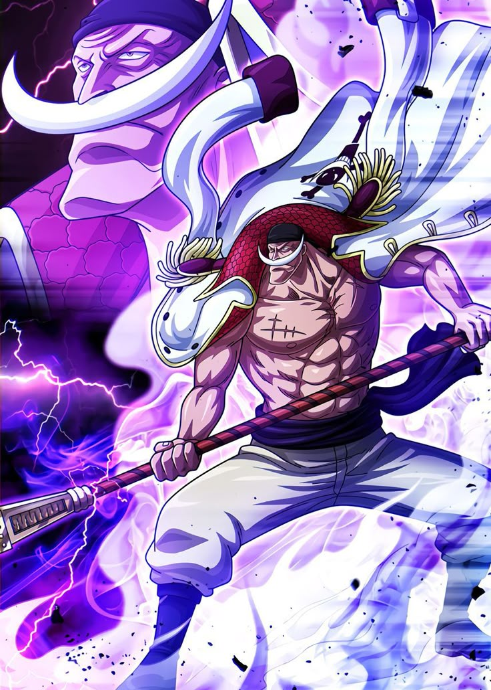

WHITE BEARD PIRATES

Edward Newgate,[12] more commonly known as "Whitebeard", was a legendary pirate and the captain of the Whitebeard Pirates. Widely known as the "Strongest Man in the World", he was considered the "Man Closest to One Piece" after Gol D. Roger's death.[7]
Growing up as an orphan on the island of Sphinx, Newgate went on to become a pirate, eventually joining the legendary Rocks Pirates. Sometime after the Rocks Pirates' disbanding, he went on to form his own crew, taking on the nickname "Whitebeard" and eventually becoming one of the Four Emperors that rule over the New World.[4][5] He shared a friendly rivalry with Roger, to whom he lent one of his crewmates, Kouzuki Oden, so that Oden could help Roger discover the final island of the Grand Line, a goal that Whitebeard had no interest in. Following Roger's death, Whitebeard became recognized as the strongest man in the world, a fact complimented by having the highest active bounty whilst alive, and the second highest bounty of any pirate in history.
Later in life, Whitebeard unknowingly took Roger's son, Portgas D. Ace, under his wing. After Ace was arrested by the Marines during a doomed attempt to hunt down Whitebeard's traitorous crew member Marshall D. Teach, Ace was to be executed by the Marines as a display to end the Great Pirate Era. Whitebeard, his crew and his allies all laid siege to Marineford to rescue Ace, resulting in the Summit War of Marineford which concluded with the deaths of both Ace and Whitebeard at the hands of Akainu and Teach, respectively. In his final moments, Whitebeard announced to the world that the One Piece did in fact exist, inspiring a new wave of pirates and effectively beginning the New Age.[13]
Whitebeard was an ally of Monkey D. Luffy and a central figure overall during the Marineford Arc.